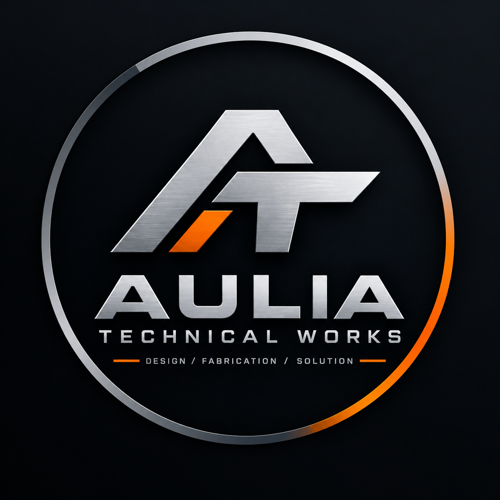

ATW
ENGINEERING TOOLS & SERVICES
Aulia Technical Works
Sedang Dikembangkan
Aulia Technical Works
Informasi Projek
Platform digital yang dirancang untuk menyediakan alat bantu perhitungan teknik, pembuatan diagram dan skematik, serta layanan desain dan rekayasa mekanik.
Pengembangan sedang berlangsungAulia Technical Works menggabungkan berbagai kebutuhan engineering dalam satu platform, mulai dari kalkulator teknik hingga layanan perancangan komponen dan mesin.
Engineering Calculator —
kekuatan material, elemen mesin,
pneumatik, hidrolik, piping, dan lainnya.
Basic & Scientific Calculator —
perhitungan matematika dasar dan ilmiah.
Diagram Maker —
pembuatan diagram untuk kebutuhan teknik.
Schematic Maker —
skematik pneumatik, hidrolik, dan piping.
3D Design & Drawing —
jasa pemodelan 3D dan gambar teknik.
Part & Machine Design —
jasa desain part dan perancangan mesin.
⚙
Platform engineering · Dalam pengembangan